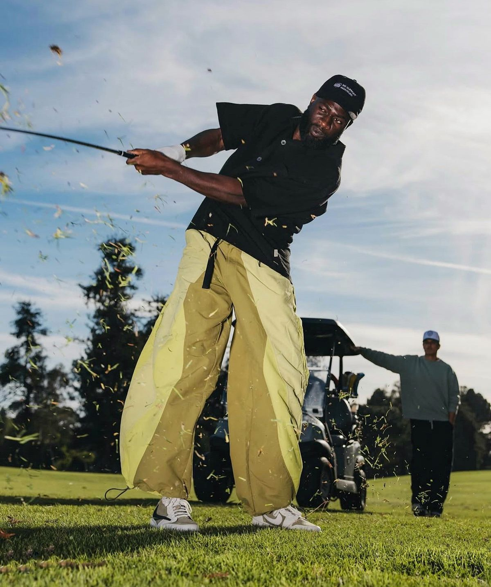

Le golf, nouveau terrain de jeu des jeunes
Longtemps perçu comme un sport de retraités en polo repassé, le golf est en train de devenir, contre toute attente, une véritable vibe. Comment un loisir réputé ringard et fermé a-t-il séduit une génération qui jurait ne jamais y toucher ?

La fin d'un cliché
Pendant des décennies, le golf a traîné une image très précise : un sport cher, lent, élitiste, réservé à une certaine bourgeoisie d'un certain âge. Tout, dans l'imaginaire collectif, le rangeait du côté de l'ennui chic. On n'imaginait pas un jeune de vingt ans y trouver le moindre intérêt.
Et pourtant. Une nouvelle génération s'est emparée du golf, l'a dépoussiéré, réapproprié, rendu cool. Elle en a gardé le geste, le cadre, le défi, mais en a jeté la raideur. Fini le silence guindé : place à la décontraction, à l'ambiance, au plaisir pur.
Ce basculement raconte une vérité plus large sur la mode des loisirs : rien n'est ringard pour toujours. Il suffit qu'une génération regarde une chose avec des yeux neufs pour la transformer. Ce que les parents trouvaient ennuyeux, les enfants le trouvent authentique.
Un sport qui colle à l'époque
Le golf offre exactement ce que cherche une génération fatiguée des écrans : du temps dehors, du calme, de la nature, un défi personnel sans adversaire direct. Dans un monde de notifications, passer quatre heures loin de tout est devenu un luxe.
C'est aussi un sport social, qui se pratique en groupe, à son rythme, entre amis. On y parle, on y rit, on s'y retrouve. Le golf réconcilie deux envies contemporaines : se déconnecter et rester ensemble. Un équilibre rare, qui explique en partie son succès neuf.
La guerre de l'argent
Pendant que les jeunes redécouvrent le golf sur le terrain, une tout autre bataille se joue au sommet. Le golf professionnel est devenu le théâtre d'une guerre économique féroce, où des fortunes colossales se disputent le contrôle du sport.
De nouveaux acteurs, portés par des capitaux immenses venus notamment du Golfe, ont bousculé l'ordre établi, débauchant les stars à coups de sommes vertigineuses. Le golf est devenu un enjeu de puissance autant qu'un sport. Derrière les greens paisibles se cachent des stratégies d'influence et des rivalités géopolitiques bien réelles.
Ce contraste est saisissant : d'un côté, un sport qui se démocratise, se détend, s'ouvre aux jeunes ; de l'autre, un business impitoyable où des États s'affrontent par champions interposés. Le golf vit sur deux planètes à la fois.
Des espaces réinventés
Le golf nouvelle génération ne se pratique plus seulement sur de grands parcours. Practice urbains, simulateurs, espaces ludiques où l'on joue en buvant un verre entre amis : le sport s'est réinventé pour la ville. On a rendu le golf accessible, décontracté, presque festif.
Ces nouveaux lieux ont fait sauter les dernières barrières. Plus besoin d'un abonnement coûteux ni d'un code vestimentaire strict pour essayer. Le golf est descendu de son piédestal pour venir à la rencontre d'un public qui ne serait jamais allé le chercher.
Plus qu'une mode, un symbole
Le retour du golf dit quelque chose de notre époque. Dans un monde rapide, numérique, épuisant, une génération cherche du lent, du vrai, du concret. Elle redécouvre le plaisir d'un geste maîtrisé, d'un espace vert, d'un moment sans écran.
Le golf n'est pas revenu malgré son calme, mais grâce à lui. Il offre exactement ce qui manque à une jeunesse saturée de vitesse : un espace pour respirer. Et c'est peut-être ça, le vrai luxe de demain, celui que ce vieux sport avait sans le savoir : le temps.
On croyait le golf coincé dans le passé. Il était juste en avance sur notre besoin de ralentir.